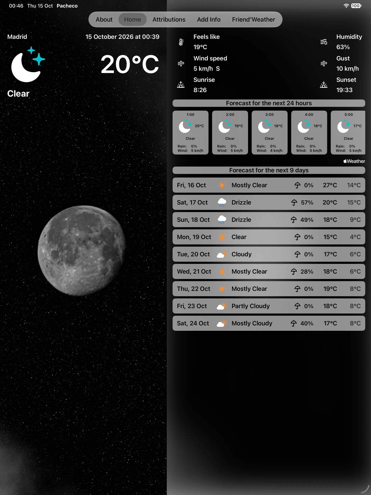
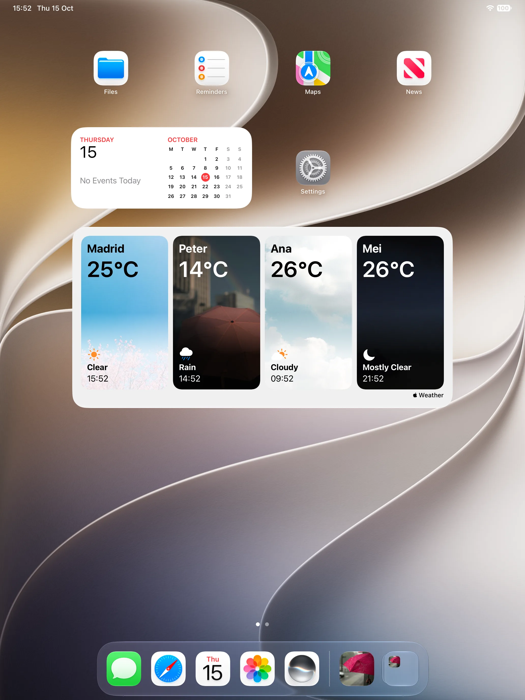

October 17, 2026
Two columns on iPad, a Friends' Weather widget for the iPad Home Screen and the Mac desktop, and the app itself on Apple silicon Macs. Nothing changes on iPhone.
Pacheco 1.2 runs on iPad, and on Macs with Apple silicon. Nothing changes on iPhone.


On iPad the weather gets two columns: the photograph on one side, full height, and the readings, the 24-hour forecast and all nine days as a list on the other. Friends sit in a sidebar beside their weather.
A widget for the iPad Home Screen and the Mac desktop: four cards side by side, your own place first, then up to three friends you choose, each with its weather and its local time. Each card opens that place in the app. Until you pick friends, New York, Madrid and Hong Kong keep the seats warm.
It comes in one size, the extra-large one, which is why it is an iPad and Mac widget and not an iPhone one.
On a Mac with Apple silicon, Pacheco installs from the Mac App Store and the widget appears in the Mac's widget gallery. It is the iPad app running there rather than a separate Mac build.
1.2.1, out the following day, fixes the one thing that version got wrong: the widget used to show the default cities for a while after a Mac restart instead of the friends you had chosen. It now keeps them.
Pacheco on the App Store — free, for iPhone, iPad, and Macs with Apple silicon.
Questions, corrections, or just to say it worked for you — write to me at commonerdev [at] gmail.com.
17 de octubre de 2026
Dos columnas en el iPad, un widget «El tiempo de tus amigos» para la pantalla de inicio del iPad y el escritorio del Mac, y la app en los Mac con chip de Apple. En el iPhone no cambia nada.
Pacheco 1.2 funciona en el iPad y en los Mac con chip de Apple. En el iPhone no cambia nada.
En el iPad el tiempo se muestra en dos columnas: la fotografía a un lado, a toda altura, y al otro los datos, el pronóstico de 24 horas y los nueve días completos en una lista. Los amigos aparecen en una barra lateral junto a su tiempo.
Un widget para la pantalla de inicio del iPad y el escritorio del Mac: cuatro tarjetas una al lado de la otra, primero tu lugar y después hasta tres amigos que tú eliges, cada una con su tiempo y su hora local. Cada tarjeta abre ese lugar en la app. Hasta que elijas amigos, Nueva York, Madrid y Hong Kong guardan el sitio.
Viene en un solo tamaño, el extragrande, y por eso es un widget de iPad y de Mac y no de iPhone.
En un Mac con chip de Apple, Pacheco se instala desde el Mac App Store y el widget aparece en la galería de widgets del Mac. Es la app de iPad ejecutándose allí, no una versión aparte para Mac.
La 1.2.1, del día siguiente, corrige lo único que esa versión hacía mal: el widget mostraba durante un rato las ciudades por defecto después de reiniciar el Mac, en lugar de los amigos elegidos. Ahora los conserva.
Pacheco en el App Store — gratis, para iPhone, iPad y Mac con chip de Apple.
Preguntas, correcciones, o solo para contarme que te funcionó: escríbeme a commonerdev [at] gmail.com.